最近一个多月，香港掀起声势浩大的抗议活动，反对政府的洗脑教育。近一周来，更是有十多万香港民众包围政府总部，进行长时间的抗议集会。
如此热闹的事情，俺自然要有所表示。所以，本周转载几篇和洗脑教育有关网文。
（编程随想注：对这篇文章，俺深有【同感】。其最后一句说得很好）
（下面是全文，文中的粗体是俺标注滴）
（引文中的粗体是俺标注滴）
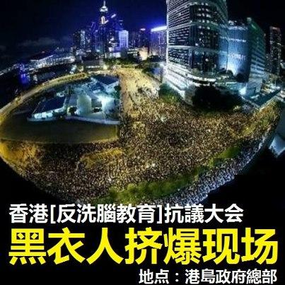
（港岛政府总部鸟瞰图）
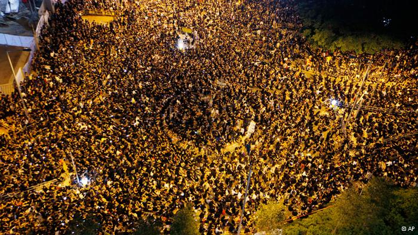
（香港政府总部被抗议民众包围）
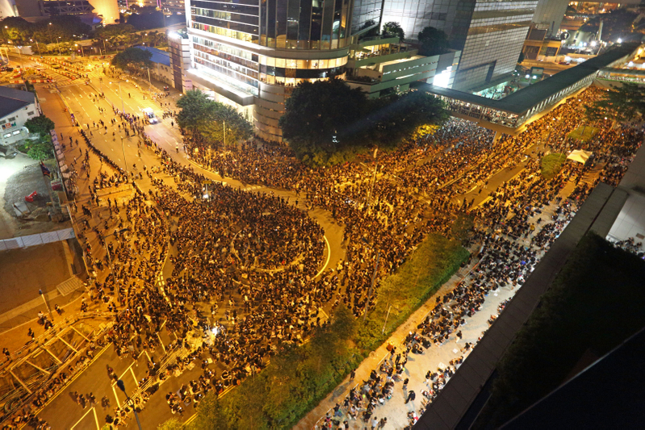
（香港政府总部被抗议民众包围）
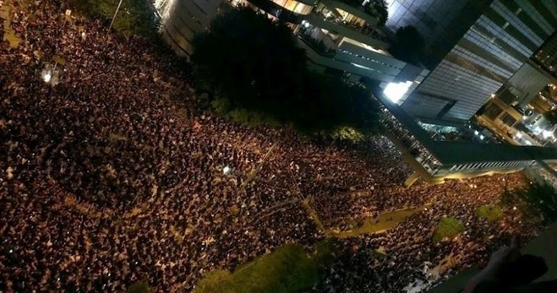
（香港政府总部被抗议民众包围）
（香港政府总部被抗议民众包围）
（抗议民众静坐在大门口）
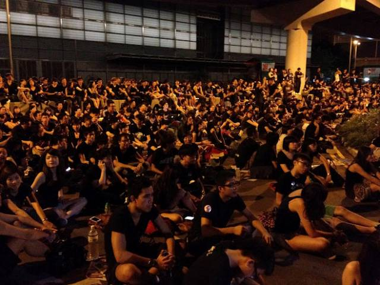
（民众熬夜到凌晨两点）
（民众熬夜到凌晨两点）
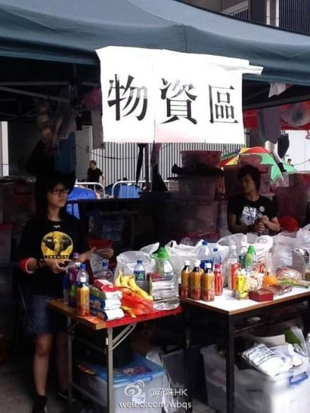
（某些市民免费发放饮料和点心给抗议民众）
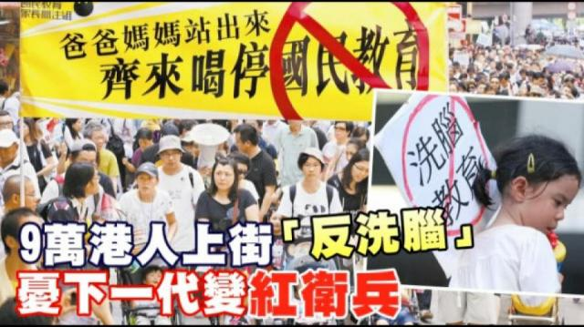
（抗议标语：”爸爸妈妈站出来 齐来喝停国民教育“）
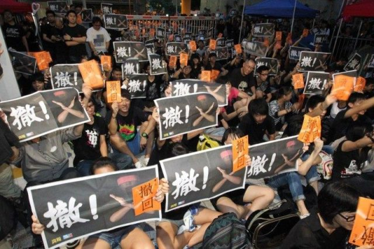
（抗议标语：”撤回“）
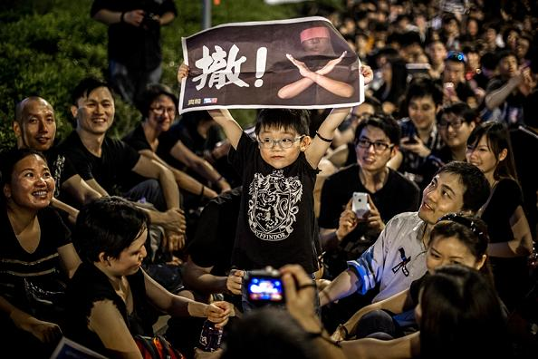
（抗议标语：”“）
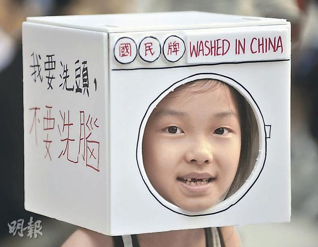
（抗议标语：”我要洗头 不要洗脑“）
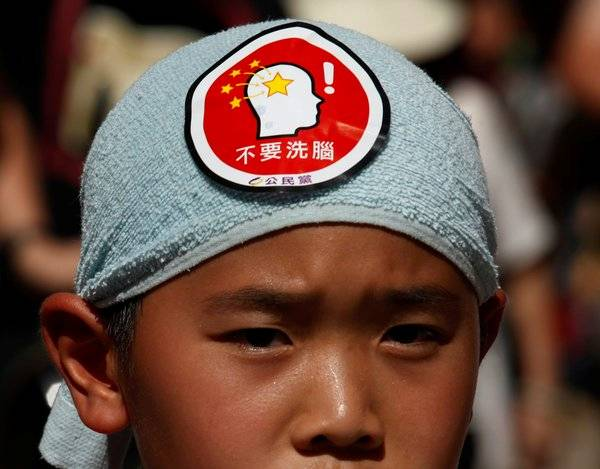
（帽子上的 logo：”不要洗脑“）
（抗议标语：”撤回洗脑课程 还我独立思考“）
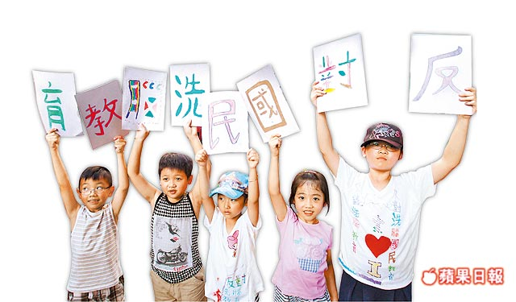
（抗议标语：”反对国民洗脑教育“）
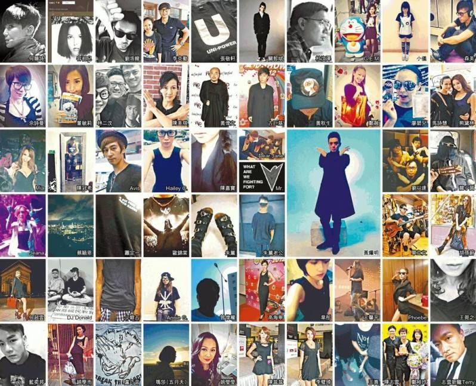
（这张是香港演艺界人士通过网络声援）
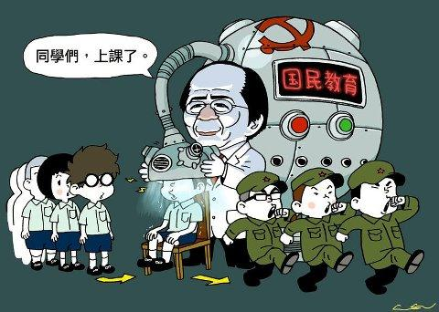
后面这几张明显是讽刺当今香港的老大“梁书记”
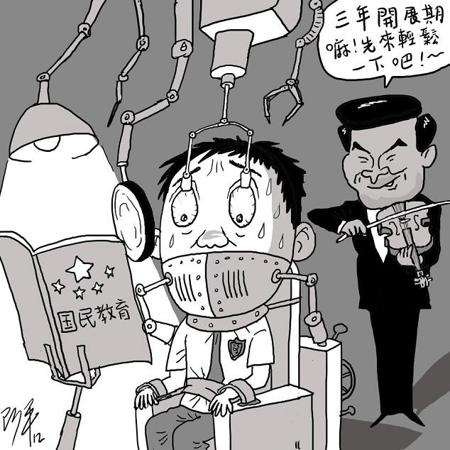 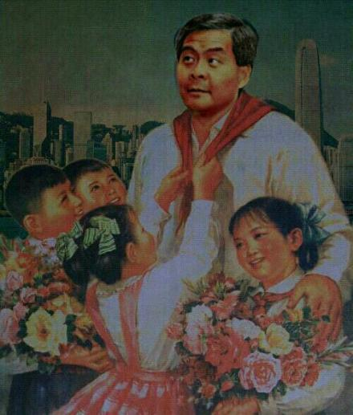 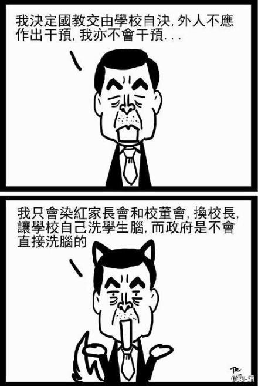 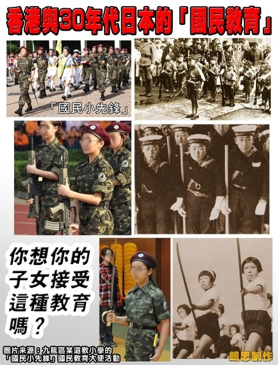 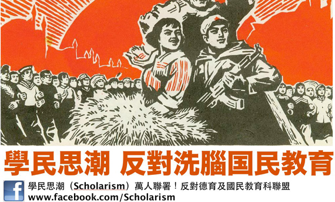 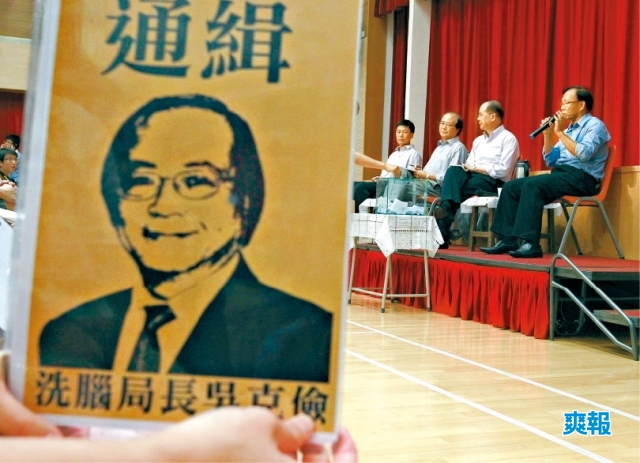 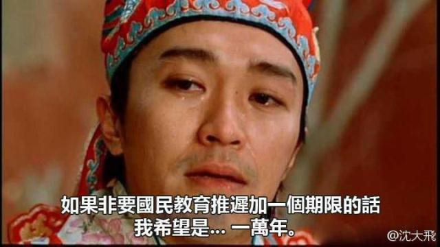 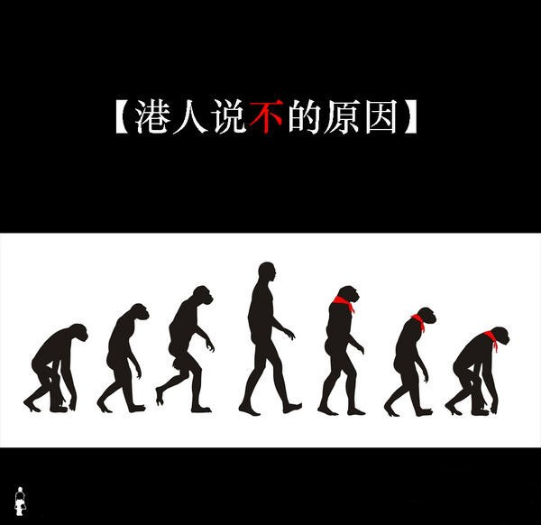
俺博客上，和本文相关的帖子（需翻墙）：
《每周转载：朝廷推香港版＜国安法＞，【一国一制】降临（外媒报道8篇）》
《变相的“全民公投”，垂死的“一国两制”——2019香港区议会选举随想》
《每周转载：香港“反送中”抗议活动的外媒报道（6月9日至6月15日）》
《每周转载：香港“反送中”抗议活动的外媒报道和网友评论（6月16日至6月22日）》
《每周转载：香港“反送中”政治抗议活动大事记（7月初至8月初）》
《每周转载：香港“反送中”政治抗议活动大事记（8月初至9月初）》
《每周转载：香港“反送中”政治抗议活动大事记（9月初至10月初）》
《每周转载：香港“反送中”政治抗议活动大事记（10月至11月）》
《每周转载：香港“占中民主运动”的外媒报道和【大量】照片（9月22日至9月28日）》
《每周转载：香港“占中民主运动”的外媒报道和【大量】照片（9月29日至10月2日）》
《每周转载：香港“雨伞革命”的外媒报道和【大量】照片（11月19日至12月2日）》
《聊聊洗脑和脑残——分析“脑残的起源”和“脑残的觉醒”》
《比“欺骗”更有效的洗脑——基于【双重思想】的思维控制》
《比“欺骗”更狡猾的洗脑——基于【真实数据】进行忽悠》
《每周转载：关于朝廷对爱国主义的忽悠（网文5篇）》
《政治常识扫盲：理清“国家、政体、公民、政府、政党”等概念》
《分析爱国主义忽悠的常见类型——顺便戳穿几个流传很广的谣言》
如此热闹的事情，俺自然要有所表示。所以，本周转载几篇和洗脑教育有关网文。
★《内地生亲述：为什么反对国民教育？》
（编程随想注：对这篇文章，俺深有【同感】。其最后一句说得很好）
国民教育课，它要培养的，不是共产党的奴隶，而是权力和利益的奴隶。
国民教育课，它要塑造的，不是铁屋中沉睡的人，而是装睡的人。因为，沉睡的人，你总有办法去唤醒。但是，你永远没有办法唤醒一个装睡的人！
（下面是全文，文中的粗体是俺标注滴）
为什么要反对国民教育课？这个问题似乎并不是问题，却让我思考了很久。作为无权无钱的普通老百姓，我的父母没有机会将我送入国际学校或者国外接受教育，因此从小学直到大学我都如大多中国的普通学生一样，在公立学校完成了16年的学习生涯，而这16年来所谓「国民教育」一直如影随形，然而它对我，以及我的同僚似乎没有带来任何影响，我的同学中无一人无比拥护共产党，无一人相信党的无比伟大与正确，似乎国民教育在我们16年身上的实践是彻底失败。那么还有反对国民教育课的必要么？以下，是我尝试从一个与「无比伟大正确的党」和各种形式的爱党爱国教育相处了16年的过来人的角度，给出的思考。
在我读小学的时候，我们有一门课叫思想道德，何谓有思想有道德的人，自然就是要爱党爱国爱人民。这其中用语暧昧不清，不像现在香港的国民教育教材如此直白，但除此之外每逢党国的重要日子，总有各种的作文比赛，演讲比赛必须强制参加，还要积极表现和几近一个小学生的文笔所能对党的种种丰功伟绩进行歌功颂德。那个时候，我们在蒙昧之中接受了最早的「国民教育」，知道了共产党在长征中的伟大战略转移（大学读历史系之后才知道其实只是被国民党围剿之后的流窜）；我党在抗日战争中的英勇事蹟（也是读历史系之后才知道当时与日军正面交锋的都是被斥为卖国的国民党，共产党正忙著在后方搞土改忙建国）。然而尽管如此，这种种灌输对我们这些即使是最听话最优秀的学生小干部来说，也不过是鹦鹉学舌有口无心，从来就没有往心里去过。为什么？因为相对学校里其他功课，它是离我们生活最远的，我们在生活中从来没有感受过我们所歌颂的新生活新中国的那些点滴，而我们的家长，或许对我们的国文与数学非常关注，但对于这些重要的爱国教育，却不置可否，异常淡漠。
读中学的时候，这门思想道德课，变成了思想政治，内容仍是大同小异。那时还多了一重班主任，常常在放学之后留堂对我们进行各种思想教育。然而对于叛逆的中学生来说，无论是课上要死记硬背的内容，还是我们那「马列老太」的絮絮叨叨都只让我们越发反感。因为渐渐开始理解成人世界的我们都心里很清楚，班主任紧抓我们爱国思想教育咄咄逼人不是因为她真的相信她所说的那一切很重要，不过是因为我们做的好，可以作为她当班主任的政绩去校长那里邀功可以评上职称加人工。而学校里多几个这样的模范班主任和班级，校长又可以在学区教育局里面有政绩，自然又是升官发财，而自然教育局上头也有人……所以我们无论是被直接还是侧面灌输的一切都只是老师们让自己升职捞好处的手段而已。
再到了读大学的时候，我们不仅有思想政治教育，还有形势与政策教育，马列思想毛概邓小平理论轮番轰炸。但在学校里我们最看不起的，就是教这些课程的老师，我们公然翘课，在她的课上大声说话吃东西看电影睡觉，甚至在某些同学认真回答问题的时候起哄，但那些老师对此却毫无办法，因为在失掉老师的威严之前，他已经失掉了学生对他的尊重。我们都知道，只有一无所长毫无学识的人才会来教这些东西，而他可能唯一擅长的只不过是须溜拍马搞关系，才为他在大学谋得这样一个闲差。
这样说来，你觉得国民教育成功么？它可以说是失败的，因为它极尽所能灌输了16年，却仍旧无论是坐在底下听的还是站在上头讲的，没一个人相信它所说的；但你也可以说它是世间难得的大成功，因为虽然人人都知道它不过是个彻头彻尾的谎言，竟然还是能被一代一代人当那么回事重复了数十年。
国民教育可怕么？其实它白纸黑字写的那些话语，根本不可怕，越是顶真极端的宣传，只会越发显得可笑；但它也非常可怕，因为举国上下竟然会愿意为了这样一个谎言而趋之若鹜，多少学生因为它而决定了自己的命运。我们明知它是谎言，却仍要认真的抄写回答每一条题目，麻木地写下那些言不由衷的谄媚之语，又有多少老师明知它的彻底荒唐，却要把它当做真理来说教，更作为判断学生道德思想的准绳！
这才是国民教育课真正可怕的地方！它可怕之处不在字面上的那些，不在于对共产党的歌功颂德，而在于它让我们中国的学生和老师，让中国的基础教育界，撒谎成性！
在学校里，我们明明知道老师和整个社会都没人相信这一套爱国教育的理论，可是老师们或许出于无奈，或许出于功利心，都把这些谎言灌输给我们，还要强迫我们违心地说一些自己或许都不理解的话语，才能得到高分，成为好学生，而一旦我们说出真心话，就要被批评，拿低分，成为坏学生。长此以往，循环往复。渐渐地无论是讲的人，还是接收的人，都变得麻木，都对此习以为常，说两句这样的鬼话根本是无所谓的事。
当我们看到如今的中国社会，为了金钱为了利益，可以出卖良心，根本毫无底线，什么都做得出的时候，除了如今的市场经济化带来的对利益的无穷追逐之外，也许同这似乎被我们视为无稽之谈和笑柄的「国民教育」，同它给我们造成的撒撒谎根本没感觉无所谓的心态，也有些许关系吧。
在学校里，老师自然就当授业解惑，更应为人师表，他们对学生建立人生价值观起著非常重要的作用。可在贯穿始终的各种国民教育里，我们一入学校从老师身上看到的是，为了国民教育的威权而可以放弃真相，放弃真理，放弃良心，随意地说假话，说谎话，更以此为荣，以此作为得利的门路。或许我们也曾有些老师在办公室里牢骚满腹，对这些鬼话大肆批判，而一上台却又充满难言之隐地照本宣科，或许这样的老师会让有些学生唏嘘，可是更多的学生或许从他们身上看到的是对权力的屈服，明知真相却不敢说出真相。在这人生的第一课堂中，国民教育课像一面镜子，让我们看到这世界上最重要的是权力与利益，什么自我，什么良心，什么真理，都必须屈从在它面前，它更界定了什么是好人，什么是成功的人生，正如我当年那个以爱国教育加倍摧残著我们的模范教师，你唯一可做的不仅要屈从这权力，更要参与到这权力的强化中去，于是好处自然源源不断滚滚而来！
国民教育可怕之处正在这里，它要告诉你的，不是一个假的历史真相，一个假的真实世界，一个假的良心，因为它也许压根不想去证明它的谎言是真理，它也根本不在乎真假；国民教育的推行，只是要告诉你，这个世界，真实不重要，良心不重要，所谓历史真相也不重要，重要的，只是利益与权力。
所以在今天，其实你问中国人，相不相信共产主义，相不相信共产党，相不相信如今的执政政府，大概没多少人会说他们相信，在如今发达的网络讯息社会，很难不知晓一二党国的种种不公义和罪恶。可是尽管如此，他们仍旧沉默地生活著，更有不少人为了成为制度中的既得利益者不仅选择沉默，更以各种合理化的理由来粉饰制度的罪恶和党国的满手血腥，或者更多的人满足于他们已经过上的丰足的物质生活而选择睁一只眼闭一只眼，莫谈国事。而其中大多的人，都是理直气壮心安理得地这样活著。
也许是有少数人至今仍虔诚地信仰著共产主义和那些爱国教育课本所写的东西，而这些人却成了这个社会中唯一的天真的活在乌托邦中的理想主义者，而这样的理想主义者却是对如今这乌烟瘴气的社会，带来最少影响与伤害的。那些攀在高位作恶多端的人呢，若问起他们的信仰，却总是不置可否，即便是言之凿凿一套又一套大道理的，等他下台或者退休之后再去问问呢？或许你才意识到当年那些大道理不过是他演戏的鬼话而已。
我在新闻中无意瞥见政总大楼门前有著一条「铁屋呐喊」的横幅，几乎让我落泪，于是我决定写下这篇长文，将我所经历的国民教育课，将它给中国带来的影响写出来，它在某种程度上承担著无形而不可避免的责任，让中国成为今天这样无以为继却深陷泥潭动弹不得的状况。
国民教育课是否会让明日的香港，成为今日的中国，不得而知，但我呼吁停止国民教育课，更希望更多的老师，尤其是基础教育界的老师能够参与到其中来。要知道，你们在台上的一句违心话一篇勉强的颂歌，会给学生带来的影响不仅仅是字面上这些东西的影响！在你们手中，决定的是香港的未来是否是一个讲良心讲真相讲道德的社会，还是一个只讲权力与利益，其他一切都被淡化的社会。
国民教育课，它要培养的，不是共产党的奴隶，而是权力和利益的奴隶。国民教育课，它要塑造的，不是铁屋中沉睡的人，而是装睡的人。因为，沉睡的人，你总有办法去唤醒。但是，你永远没有办法唤醒一个装睡的人！
★《一個被洗腦者看國民教育 @ BBC/英国广播公司》
香港的反國民教育運動如此激烈，特別是國民教育教材中那句共產黨是團結進步無私的執政集團，令到這本教材令香港很擔憂。那到底這類洗腦教育的影響多深遠呢？我想就自己的親身經歷來說一下洗腦教育到底可以洗多少人的腦和多少被洗腦後可以反洗腦成功的。
先從小學來看，幾乎所有的小學生都被成功洗腦的，即使有些學生可能受父母的教育，會相對地排斥這些洗腦愛國教育。但基本上，小學生是洗得很成功的，這個主要是小學階段，孩子本身缺乏獨立思考能力，和老師不會主動教育學生去獨立思考問題有關。筆者就是個例子，小學的時候，是沒有懷疑過共產黨有錯的，雖然家父不斷對筆者啟蒙，但成果依然很有限，真正我徹底拋棄這些愛國主義教育的，是六四事件，我有幸通過香港電視看到整個事件的過程，就這麼一個事件，使我在小學畢業前，在一夜之間拋棄了所有的愛國主義教育。所以，香港人如此擔心小孩子被洗腦是有道理的。那既然小學生幾乎 100% 被洗腦的情況下，那作為成年前最關鍵的中學階段如何呢？
中學階段的情況，根據我的觀察，在中學階段，是一半對一半，而且，是隨著年級的增長，不接受這種教育的比例就越高。當然，我的觀察是基於我的中學時代，當時因為六四期間和之後相當長的時間，廣東省都是沒有切斷香港電視的新聞信號，所以，可以合理假設我的同學都看過六四的場面。因為六四後，所有的學校都對學生進行洗腦教育，可以說，那是一次我親身經歷的強力洗腦場面，用大量「共和國衛士」的照片和大量的宣傳沒有開槍的謊言，果然，的確有同學可以產生不相信香港電視的情況。但隨著那些經不起考驗的「共和國衛士」被遺忘，到了中學畢業的時候，連跟我有政見不同的同學，都竟然說，現在不會有人願意為國捐軀的啦。高一的時候說自己最憎恨美國的同學，高三竟然去了北京新東方讀TOEFL。所以，如果悲觀一點的，是一半同學在中學畢業的時候徹底拋棄所接受過的愛國主義教育，如果樂觀一點的，估計9成以上都是不相信那些愛國教育的了，因為嘴上愛國和心裏愛國是兩個概念。
到了大學階段，不用說了，無論是學院派大學還是社會大學，都不會接受這類教育的，也不會相信這類教育的，如果你跟一個大學裏的人說共產黨是團結進步無私的執政集團，肯定是一片笑聲。所以，香港那些編寫這本教材的教授們，你們自己真的相信共產黨是團結進步無私的執政集團嗎？難道你們不覺得這句話讀一次就笑一次嗎？即使你們真的是這麼天真相信這句話，那難道毒奶粉，屠殺學生，製造文革，三反五反，大躍進，這些都是「進步」的事情嗎？大量的貪官就是「無私」的事情嗎？王立軍，林彪事件反映的是「團結」的政黨嗎？可以說，這句話，幾乎任何一個形容詞都是錯的。
所以，我相信寫這本教材的教授本身都不會相信這本教材的真實性的。既然大學中的老師都不相信這些國民教育，那些學生更不可能相信的。
★《梁文道：無所謂的謊言 @ 香港雜評》
（引文中的粗体是俺标注滴）
當香港的朋友都去了政府總部門外示威的時候，我正在大陸演講。雖然那天我和他們講了一點正在香港發生的事，以及那本好玩的「中國模式」教科書。當然，我會講到那本書的精華，例如「中國共產黨是個進步、無私與團結的執政集團」。一聽到這句話，幾乎全場哄笑；然後有人高聲喊道：「梁老師，你們香港人一定要保住香港，好好奮鬥下去」。
眼前這群青年全是受過「愛國教育」的人，你說這種教育有效嗎？如果真的有效，他們為什麼會笑？為什麼會有這樣的反應？可是這種教育最叫人擔心的地方並不是它真能洗腦，而是它洗腦無效的後果，恰巧正是那天我演講的重點，一種犬儒的道德虛無。
這就像大家早就在哈維爾文章裏見過的那個故事：一個肉販在他攤舖後方的牆上懸掛了一幅標語，上頭寫着「全世界無產階級聯合起來」。為什麼他要掛上這幅標語？是因為這句話和賣肉的生意相關？是因為他很認同這句話，非常希望這個目標早日實現？不，他掛上這句話甚至不是出於強迫。這幅標語可有可無，可掛可不掛；但掛了也不礙事，而且總比不掛要好。這位肉販對「全世界無產階級聯合起來」的態度既非肯定，亦非否定。在那樣的政治環境裏頭，掛上這個遠大的理想十分合適；可他對這個理想的態度卻是冷漠的，無所謂的。
你在自己的舖子裏貼上一句自己都不相信的政治宣言，這當然也是一種說謊。可怕的是，你不在乎這種欺瞞；久而久之，甚且習慣活在謊言之中，反正如此撒謊也不難受。蔓延下去，你可能還會開始懷疑任何宏大的理念與崇高的信仰，覺得它們都只不過是種怎麼說都無所謂的大話。
中共是個進步、無私與團結的執政集團？學過這句話的人不相信，連中共自己也不相信，於是大家都笑了。大家聽見謊言，大家誦讀謊言，並且沒有人感到不安，只是笑，小聲或者大聲地笑。
★照片若干
◇十多万人彻夜集会抗议
（港岛政府总部鸟瞰图）
（香港政府总部被抗议民众包围）
（香港政府总部被抗议民众包围）
（香港政府总部被抗议民众包围）
（香港政府总部被抗议民众包围）
（抗议民众静坐在大门口）
（民众熬夜到凌晨两点）
（民众熬夜到凌晨两点）
（某些市民免费发放饮料和点心给抗议民众）
◇香港民众的抗议标语
（抗议标语：”爸爸妈妈站出来 齐来喝停国民教育“）
（抗议标语：”撤回“）
（抗议标语：”“）
（抗议标语：”我要洗头 不要洗脑“）
（帽子上的 logo：”不要洗脑“）
（抗议标语：”撤回洗脑课程 还我独立思考“）
（抗议标语：”反对国民洗脑教育“）
（这张是香港演艺界人士通过网络声援）
◇讽刺洗脑教育的漫画
后面这几张明显是讽刺当今香港的老大“梁书记”
俺博客上，和本文相关的帖子（需翻墙）：
《每周转载：朝廷推香港版＜国安法＞，【一国一制】降临（外媒报道8篇）》
《变相的“全民公投”，垂死的“一国两制”——2019香港区议会选举随想》
《每周转载：香港“反送中”抗议活动的外媒报道（6月9日至6月15日）》
《每周转载：香港“反送中”抗议活动的外媒报道和网友评论（6月16日至6月22日）》
《每周转载：香港“反送中”政治抗议活动大事记（7月初至8月初）》
《每周转载：香港“反送中”政治抗议活动大事记（8月初至9月初）》
《每周转载：香港“反送中”政治抗议活动大事记（9月初至10月初）》
《每周转载：香港“反送中”政治抗议活动大事记（10月至11月）》
《每周转载：香港“占中民主运动”的外媒报道和【大量】照片（9月22日至9月28日）》
《每周转载：香港“占中民主运动”的外媒报道和【大量】照片（9月29日至10月2日）》
《每周转载：香港“雨伞革命”的外媒报道和【大量】照片（11月19日至12月2日）》
《聊聊洗脑和脑残——分析“脑残的起源”和“脑残的觉醒”》
《比“欺骗”更有效的洗脑——基于【双重思想】的思维控制》
《比“欺骗”更狡猾的洗脑——基于【真实数据】进行忽悠》
《每周转载：关于朝廷对爱国主义的忽悠（网文5篇）》
《政治常识扫盲：理清“国家、政体、公民、政府、政党”等概念》
《分析爱国主义忽悠的常见类型——顺便戳穿几个流传很广的谣言》
版权声明
本博客所有的原创文章，作者皆保留版权。转载必须包含本声明，保持本文完整，并以超链接形式注明作者编程随想和本文原始地址：
https://program-think.blogspot.com/2012/09/weekly-share-20.html
本博客所有的原创文章，作者皆保留版权。转载必须包含本声明，保持本文完整，并以超链接形式注明作者编程随想和本文原始地址：
https://program-think.blogspot.com/2012/09/weekly-share-20.html